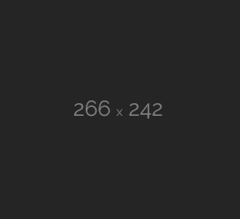
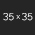

'Yolanda' fund, pinangangambahang gamitin sa vote-buying
ABS-CBNnews.com
How Aquino endorsement may boost Roxas' ratings
RYAN CHUA
Quorum woes derail kontra-SONA
GEORGE CARINO
Palace denies hand in effort to disqualify Poe
ABS-CBNnews.com

IN DEPTH NEWS STORY
An In Depth Look at the Philippine Political Family Dynasties
Social Buzz

Candidates
Ping Lacson
Miriam Santiago
Mar Roxas
Jojo Binay
Rody Duterte
Grace Poe
Bongbong Marcos
HALALAN 101 OR VOTER’S EDUCATION
Who is a Qualified Voter?
You are a qualified if you have been residing 6 months in the locality (Barangay, City...
Read MoreThings to Bring When Registering
In some cases an applicant may be required to present either or bring the following:...
Read MoreStep-By-Step Process of Registration
When qualified and registreing: Step 1: Bring a valid ID with photograph and signature...
Read MoreHow to Validate your Registration
I’m registered. Why should I still have myself “validated”? This is because if you do not have bio...
Read MoreWho is a Qualified Voter?
You are a qualified if you have been residing 6 months in the locality (Barangay, City...
Read MoreThings to Bring When Registering
In some cases an applicant may be required to present either or bring the following:...
Read MoreStep-By-Step Process of Registration
When qualified and registreing: Step 1: Bring a valid ID with photograph and signature...
Read MoreBMPM REPORTS
BMPM CTA to Submit
-
WEBSITE
Upload your file or send us the URL link by going to our “Submit A Report”. page. Fill in the rest of the fields and click “Submit”.
-
EMAIL
If you have an email account, you may email your report to ireport@abs-cbn.com.
-
COMELEC APP
On the Comelec mobile app, click on the “BMPM” tab and submit the details.
-
HASHTAG
Simply add #Halalan2016 to your tweet or Instagram photo
4-cornered fight in 2016 presidential polls?
RYAN CHUA
Binay confirms strained relations with Poe
GEORGE CARINO
Poe preparing platform, but still undecided about 2016
ABS-CBNnews.com
Students forced to attend Binay 'TSONA'?
RAYA CAPULONG
#Halalan2016


@jjdcruz
Registered Voter, finally! #BMPMTayoNa #Halalan2016 #Election #Registered #Voter
@jjdcruz
Registered Voter, finally! #BMPMTayoNa #Halalan2016 #Election #Registered #Voter
@jjdcruz
Registered Voter, finally! #BMPMTayoNa #Halalan2016 #Election #Registered #Voter